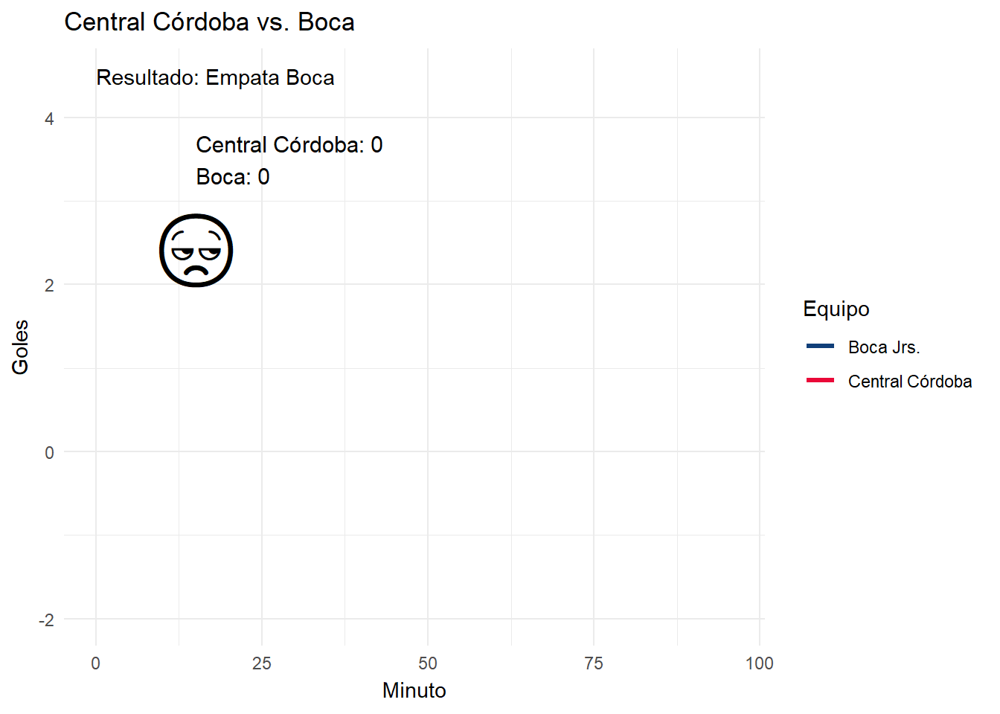

Ver código
library(readxl) # Leer archivos de excel
library(tidyverse) # Procesar los datos
library(ggplot2) # Hacer gráficos
library(gganimate) # A lo que vinimos, a animar los gráficosHace rato que no hacía boludeces, así que mientras pensaba un fin de semana qué podía hacer, Boca jugaba un nuevo partido en el cual empezó perdiendo y terminó ganando, y me dí cuenta que nunca había usado el paquete gganimate para animar una visualización, así que qué mejor que usar un partido de Boca para transmitir las sensaciones del partido a través de un gráfico animado.
Para este caso, vamos a necesitar los siguientes paquetes:
library(readxl) # Leer archivos de excel
library(tidyverse) # Procesar los datos
library(ggplot2) # Hacer gráficos
library(gganimate) # A lo que vinimos, a animar los gráficosDesde que Diego Martinez, el actual DT de Boca, asumió su cargo en Diciembre de 2023, una de las características que tiene su gestión (además de jugar mejor), es que varios partidos los comenzó perdiendo, y terminó ganando. Al día de hoy, (22 de mayo de 2024), ganó 12 partidos, de los cuales en 5 el primer gol lo hizo el rival.
Así que qué mejor ejemplo para graficar este caso de uso que aprovechando el vendaval de sensaciones que es mirar un partido de Boca Jrs. en la era Martinez.
En la fecha 2 del torneo local, Boca enfrentó como visitante a Central Córdoba de Santiago del Estero, que convirtieron el primer gol a los 3’ de comenzado el partido, y luego hicieron el 2-0 en el tiempo añadido al final del primer tiempo.
Apenas comenzó el 2° tiempo, Equi Fernandez hizo el 2-1, la Bestia Merentiel lo empató y lo dió vuelta a los 52’ y 80’ respectivamente. Cuando el partido estaba en tiempo añadido, Equi Fernandez puso el 2-4 final.
Acompáñenme a experimentar el vendaval de sensaciones que es vivir un partido de Boca en un gráfico.
Vamos a usar el siguiente dataset:
# Carga de datos
boca <- read_excel("boca_vibes.xlsx")
# Explora las primeras 6 filas
head(boca)# A tibble: 6 × 5
minuto central_cordoba boca diferencia resultado
<dbl> <dbl> <dbl> <dbl> <chr>
1 1 0 0 0 Empata Boca
2 2 0 0 0 Empata Boca
3 3 1 0 -1 Pierde Boca
4 4 1 0 -1 Pierde Boca
5 5 1 0 -1 Pierde Boca
6 6 1 0 -1 Pierde BocaEl dataset contiene un detalle de los resultados minuto a minuto, podemos observar el primer gol de Central Córdoba convertido por Rodrigo Uriel Atencio a los 3 minutos que deja a Boca abajo en el marcador.
Para hacer el primer gráfico necesitamos transformar un poco los datos para que los goles de central_cordoba y de boca nos queden en una misma columna.
partido <- boca |>
pivot_longer(cols = c(central_cordoba, boca),
names_to = "equipo",
values_to = "goles") |>
mutate(equipo = str_replace(equipo, "central_cordoba", "Central Córdoba"),
equipo = str_replace(equipo, "boca", "Boca Jrs."))
# Ver cómo quedó el dataset
head(partido)# A tibble: 6 × 5
minuto diferencia resultado equipo goles
<dbl> <dbl> <chr> <chr> <dbl>
1 1 0 Empata Boca Central Córdoba 0
2 1 0 Empata Boca Boca Jrs. 0
3 2 0 Empata Boca Central Córdoba 0
4 2 0 Empata Boca Boca Jrs. 0
5 3 -1 Pierde Boca Central Córdoba 1
6 3 -1 Pierde Boca Boca Jrs. 0Usemos un gráfico de líneas para visualizar el partido.
ggplot(partido) + # Datos
geom_line(aes(x = minuto, y = goles, color = equipo), # Tipo de gráfico y variables
linewidth = 1.1) + # Ancho de la línea
scale_color_manual(values = c("#103f79", "#EA0838")) + # Colores custom
theme_minimal() + # Estilo del gráfico
labs(title = "Central Córdoba vs. Boca",
x = "Goles", y = "Minuto",
color = "Equipo")
Le podemos incorporar una línea adicional para visualizar cómo iba el partido para Boca, en el cual podemos apreciar cómo arranca perdiendo, cerca del minuto ’50 lo empata, y en el final lo da vuelta.
# Guardamos el gráfico en un objeto llamado 'p'
p <- ggplot(partido) + # Datos
geom_line(aes(x = minuto, y = goles, color = equipo), # Tipo de gráfico y variables
linewidth = 1.1) + # Ancho de la línea
scale_color_manual(values = c("#103f79", "#EA0838")) + # Colores custom
theme_minimal() + # Estilo del gráfico
labs(title = "Central Córdoba vs. Boca",
x = "Minuto", y = "Goles",
color = "Equipo") +
geom_line(data = boca, aes(x = minuto, y = diferencia), linewidth = 1.3,
linetype = 2)
# Veamos el gráfico
p
Pero venimos a ver un gráfico animado, así que demosle movimiento al gráfico.
# Animemos el gráfico
# transition_reveal funciona con gráficos de líneas
p +
transition_reveal(along = minuto) # MAGIA!!!!
Y manipulando un poco los datos podemos hacer cosas gloriosas…
# Añadir una columna para agregar un emoji en función de la diferencia y los goles
boca <- boca |>
# Arranca el partido
mutate(estado = if_else(diferencia == 0 , "meh", if_else(
# Primer gol de Central Córdoba
diferencia < 0 & central_cordoba == 1, "cry", if_else(
# Segundo gol de Central Córdoba
diferencia < 0 & central_cordoba == 2, "angry", if_else(
# Primer gol de Boca
diferencia < 0 & boca == 1, "fear", if_else(
# Segundo gol de Boca
diferencia == 1 & boca == 2, "biceps", if_else(
# Tercer gol de Boca y cuarto gol
diferencia == 1, "smile", "lol")
)
)
))))
# Mapear cada nombre de emoji a un emoji
# Link al paquete de emoji: https://github.com/hadley/emo
boca <- boca |>
mutate(emoji = map_chr(estado, emo::ji))
# Veamos como quedan los datos
head(boca)# A tibble: 6 × 7
minuto central_cordoba boca diferencia resultado estado emoji
<dbl> <dbl> <dbl> <dbl> <chr> <chr> <chr>
1 1 0 0 0 Empata Boca meh "\U0001f610"
2 2 0 0 0 Empata Boca meh "\U0001f612"
3 3 1 0 -1 Pierde Boca cry "\U0001f622"
4 4 1 0 -1 Pierde Boca cry "\U0001f622"
5 5 1 0 -1 Pierde Boca cry "\U0001f622"
6 6 1 0 -1 Pierde Boca cry "\U0001f622"# Hagamos el gráfico final con anotaciones
p +
# Añadimos anotaciones en función de los goles
geom_text(data = boca, aes(x = 15, y = 3.5,
label = paste0("Central Córdoba: ", central_cordoba,
"\nBoca: ", boca)),
size = 4, # Tamaño de la letra
hjust = 0) + # Alinea a la izquierda
# Añadimos anotaciones usando emojis
geom_text(data = boca, aes(x = 15, y = 2.5, label = emoji),
size = 15) +
# Añadimos un "subtítulo"
geom_text(data = boca, aes(x = 0, y = 4.5, label = paste0("Resultado: ", resultado)), hjust = 0) +
# Animemos el gráfico
transition_reveal(along = minuto)
# Ya que estamos, guardemos el gráfico en un gif
anim_save("boca_gganimate.gif", animation = last_animation())Si quieren ver cómo fue el partido, pueden ver el siguiente resumen. Después me cuentan qué transmite más emoción, si mi gráfico o el video 🧐